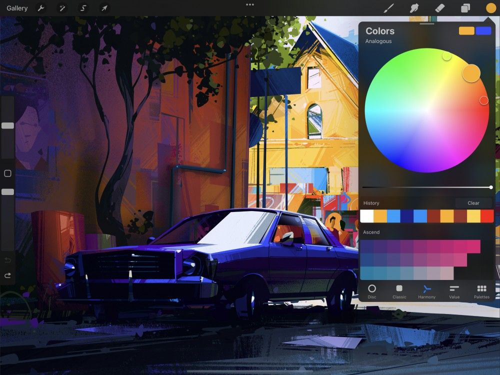
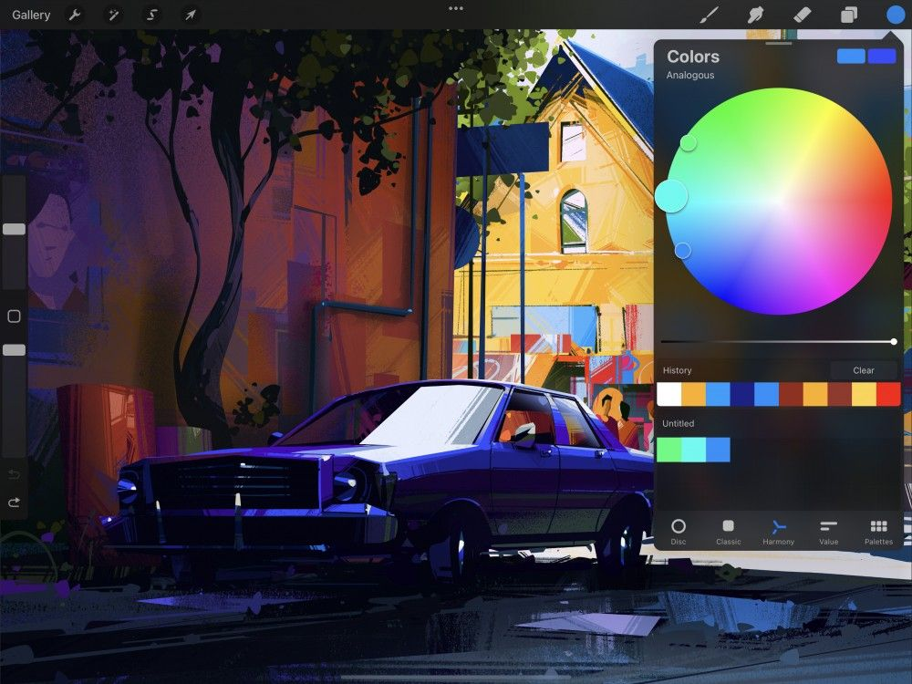

📖 Đã dịch sang tiếng Việt. Thuật ngữ chuyên môn giữ tiếng Anh — rê chuột để xem nghĩa (tooltip).
Harmony
Supercharge your art with the power of color theory. Harmony builds instant color schemes based on your color choices. These can be Complementary, Split Complementary, Analogous, Triadic, or Tetradic.
Chọn bộ màu
Ở phía bên phải của menu trên cùng, bạn sẽ thấy Active Color. Chạm để mở Color Panel, sau đó chạm tab Harmony. Procreate sẽ ghi nhớ tùy chọn của bạn cho lần sau.
Đĩa Hue / Saturation
Giao diện Harmony kết hợp Hue và Saturation thành một bánh xe màu duy nhất.
Các màu ở vành bánh xe có độ bão hòa tối đa. Các màu này giảm dần độ bão hòa khi đi về giữa bánh xe.
Thanh trượt Brightness (độ sáng)
Điều chỉnh Brightness bằng cách kéo thanh trượt đen–trắng bên dưới bánh xe.
Các Reticle (vòng tròn chọn)
Bánh xe màu chứa một reticle: một vòng tròn trong suốt mà bạn có thể kéo để chọn màu.


Bánh xe màu Harmony chứa một hoặc nhiều reticle phụ tùy thuộc vào chế độ Harmony đang kích hoạt, bên cạnh reticle chính. Các reticle phụ dịch chuyển vị trí dựa trên nơi bạn di chuyển reticle chính trong chế độ Harmony đã chọn, nhằm hiển thị bộ màu hài hòa mà bạn chọn.
Số lượng reticle phụ thay đổi tùy theo chế độ Harmony đang kích hoạt.
Modes
Chọn từ năm chế độ khác nhau. Các chế độ này chọn bộ màu hài hòa từ bánh xe, dựa trên lý thuyết màu cổ điển.
Ở trên cùng bên trái của giao diện Harmony, bạn sẽ thấy chữ Complementary. Đây là chế độ Harmony mặc định. Chạm vào Complementary để xem danh sách đầy đủ năm chế độ Color Harmony khác nhau.
Complementary (bổ túc)
Hai reticle chọn màu ở các vị trí đối diện nhau trên bánh xe màu.
Vì là hai màu đối lập chính xác, các màu bổ túc có thể làm nhau trông sáng hơn. Một màu luôn là màu lạnh và màu kia luôn là màu ấm. Cả hai cùng nhau tạo ra độ tương phản cao nhất có thể trên bánh xe màu. Chúng cũng có thể pha trộn để tạo các sắc độ trung tính hiệu quả, hoặc hòa quyện để tạo bóng.
Split Complementary (bổ túc phân đôi)
Ba reticle chọn màu theo hình tam giác nhọn.
Bộ màu split complementary dùng một màu nền và hai màu phụ đặt đối xứng trên bánh xe màu. Trong split complementary, ba reticle tạo thành một tam giác hẹp. Điều này cho bạn sự kết hợp giữa một màu ấm và hai màu lạnh, hoặc ngược lại. Khác với màu complementary, bộ màu split complementary thường cân bằng hơn và dễ chịu hơn với mắt. Nói chung màu ở đầu ‘nhọn’ của tam giác là tông chính. Hai màu phụ đóng vai trò là màu sáng và màu nhấn.
Analogous (tương cận)
Ba reticle chọn các màu lân cận từ cùng một vùng trên bánh xe màu.
Bộ màu này dùng một màu nền và hai màu phụ, giống như Split Complementary. Như trên, màu nền nên dùng làm tông chính trong tác phẩm. Hai màu phụ được dành cho các điểm sáng và nhấn. Vì ba tông của màu analogous nằm gần nhau, kết quả mang tính ấm hoặc lạnh đồng nhất. Điều này tạo ra một bộ màu thanh lịch và rõ ràng, không gây căng thẳng cho bảng màu.
Ba reticle chọn màu theo hình tam giác đều.
Biến thể này của bộ màu split complementary đặt khoảng cách đều giữa cả ba màu. Kết quả là bộ ba màu có độ chủ đạo ngang nhau. Điều này tạo ra một kết quả sống động và nổi bật, cần được cân bằng cẩn thận trong tác phẩm.
Tetradic (tứ sắc)
Bốn reticle chọn màu theo hình vuông. Các màu này nằm ở các góc đối diện của bánh xe màu.
Giống như bộ Tam giác, tetrad đặt khoảng cách đều giữa tất cả các màu đã chọn. Điều này dẫn đến việc không màu nào rõ ràng át được màu kia. Kết quả sống động và nhiều màu sắc. Các tông này khi kết hợp có thể gai góc. Cần lên kế hoạch cẩn thận và cách tiếp cận tinh tế để đạt kết quả thị giác tốt nhất.
Chọn màu
Chọn từng màu trong bộ màu của bạn để bắt đầu vẽ hoặc xây dựng một Palette (bảng màu) hài hòa.


Chạm bất kỳ reticle nào để chọn màu bên trong nó và vẽ ngay với màu đó. Chạm rồi thả các màu do Harmony đã chọn cho bạn vào một palette từng cái một để tạo bộ màu.
Hoàn tất
Các hình chữ nhật ở trên cùng bên phải của Color Panel hiển thị màu chính và màu phụ của bạn.
Chạm bất kỳ đâu bên ngoài Color Panel để đóng lại khi đã ưng ý với màu đã chọn.
Still have questions?
If you didn't find what you're looking for, explore our video resources on YouTube or contact us directly. We’re always happy to help.